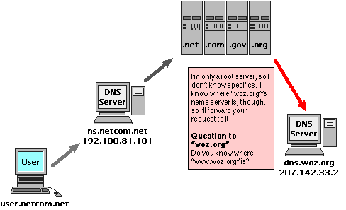
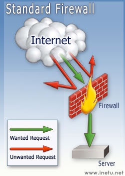
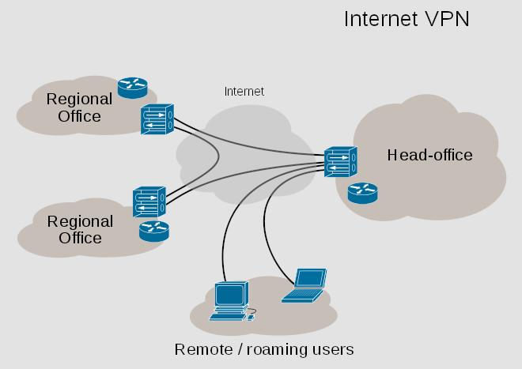

DNS
Domain Name Service. This service keeps a list of Computer names and their IP addresses. If you access a computer by it's name (such as www.woz.org as illustrated here) you are using a DNS server somewhere that translates that name to it's IP address so the router can route your request to the proper destination.
If the computer you are looking for is on the same LAN as you, then the local DNS server just answers this quickly. Either you would have entered the DNS address into your workstation, or if you are set to be dynaimic, the DHCP server will tell your computer where the DNS server is. Most of the time, these two services will be running on the same server hardware. Even in a little home network, there is software that will do this for you, either in your broadband connection box, or even built right into your Operating System.
If the computer you are looking for is on a separate LAN, things get a little trickier.
Your local DNS server doesn't keep a copy of all computer names in the world. That would just be too much work to do, and nearly impossible to maintain. What happends instead is pretty much the same situation Routers go through when they don't know where to route your data too. They ask someone else. As spread out as the Internet tries to be, there is still a bit of a pyramid structure when it comes to DNS services.
The Local DNS will ask what's known as a Root server to find the domain's DNS server wich will then direct you to the right server on it's network. These Root DNS servers are owned and operated by the places where you go to register a public network name, such as Internic. In the beginning, this was only handled by the US Government, but there are now several commercial naming service centers around to help with this task.
NTP
Network Time Protocol, which sets computer clocks over network connections. Many NTP servers exsist on the internet, and are normally used by network devices and servers to keep accurate time reporting for data synchronization and accurate log reporting.
NNTP
Network News Transfer Protocol. Used for transporting Usenet data.
Usenet
A bulletin board like message posting network. Usenet was created before the Web, but resembles a network of blogs, or a form of public emailing. Usenet access requires an NNTP server account and NewsReader client software. There are also Web based Usenet gateways, such as Google Groups, that will allow you to read and post to the Usenet, and only requiring a web browser and a connection to the free Google groups website.
Wireless
Standards:
- 802.11a = 54MBps @ distance of 50 feet
- 802.11b = 11MBps (5MBps with WEP) @ distance of 200 feet
- 802.11g = 54MBps (30MBps with WEP) @ distance of 200 feet
- 802.11n = 100MBps (not yet available)
- Bluetooth = 2MBps @ distance of 30 feet (No TCP/IP support)
- Pre-N = a proprietary way to push wireless speeds until the new 802.11n standard is completed.
Wireless Terms:
- WEP (Wired Equivalent Privacy) = early wireless encryption.
- WAP (WiFi Protected Access) = newer, better than WEP encryption.
- VPN (Virtual Private Network) = how people without WAP secure their WLANs.
- SSID (Service Set Identifier) = wireless network name that when set to broadcase just identifies itself so you can choose which wireless connection to logon to, or it can act as a password if the access box is set not to broadcast the SSID.
- MIMO (multiple-input multiple-output)= A technique for boosting wireless bandwidth and range by taking advantage of multiplexing.
Wireless Modes:
- AdHoc is a peer-to-peer form of wireless communication, allowing wireless users to talk directly to each other.
- Infrastructure has your workstation access one specific wireless access box. This box assigns your systems IP address and determines the security policy (WEP, WAP, VPN, etc).
Router
This service passes information from one network to another using a routing table. Routers are usually specially built computers dedicated to this service, but can be setup on any computer with the right software and at least 2 network cards installed.
The distinction between a Firewall, NAT, and Router shouldn't confuse you. These are just services, or things a computer can do. All of these things are often together in the same machine. They don't have to be, but they usually are. In fact, in a small office network, it's not too uncommon to have all the Network services you can think of like DHCP, DNS, Firewall, NAT, Router, and Gateway all on the same computer, lumped together with e-mail, file, and print server services.
As Networks get larger, more users are added, and traffic loads increase, you can separate these services out to among all kinds of hardware configurations. I don't even want to get into virtualization yet, but trust me, it's important to know the roles these technologies play, but the lines between them are not set in stone, and will continue change and evolve for a long time to come.

Firewall
This is a general term used to describe computer security. I think the term comes from another general term for the safety device in a car that protects the passengers inside the car from the heat and risk of the engine, also in a building a firewall is non flamable material that protects emergency areas like stairways.
When placed in a computer, a firewall focuses on security that allows acceptable data to enter your computer, and stops unknown data from entering. Computer firewalls are normally software that monitors what data is going in and out of your system.
A network firewall focuses on security that separates private network data from the public Internet data. Network firewalls are usually combinations of things. There are separate hardware devices that can be attached to the network to monitor network traffic like computer firewalls monitor computer data. There are also other methods that can be considered part of your network firewall such as route-filtering, NAT, Intrusion Detection and Prevention, the list goes on and on.
VPN

A virtual private network (VPN) extends a private network across a public network, and enables users to send and receive data across shared or public networks as if their computing devices were directly connected to the private network. Applications running across a VPN may therefore benefit from the functionality, security, and management of the private network.
Firewalls and VPN services are closely tied to security. Security is such a large issue, I've split those topics a separate page.
Click here to go to Computer and Network Security.